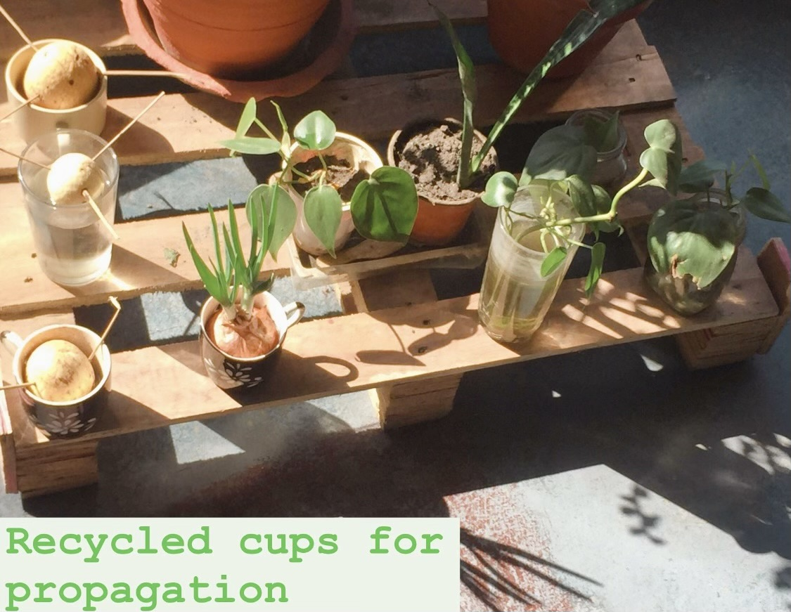
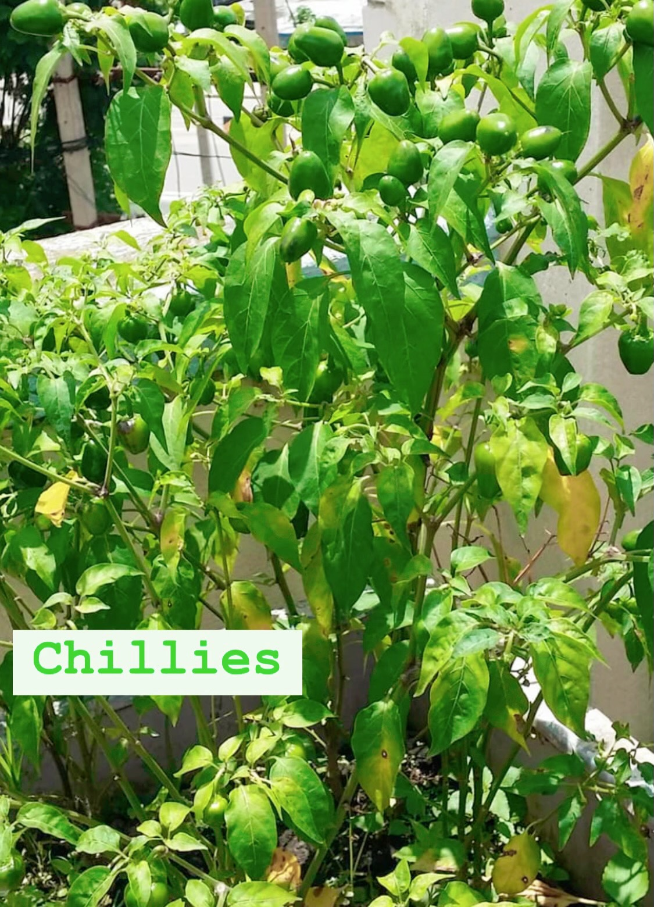

Nature Nurtures
This reflective essay highlights my evolving relationship with nature, sustainability, and the learning curve I’ve navigated throughout my university journey. Looking back, I admire how far I’ve come and the growth I’ve experienced along the way, as I continue to deepen my understanding of the world around me.
Maa's Garden

